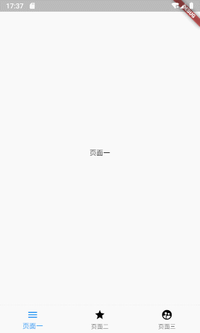

几乎99%的应用类APP都需要一个底部导航栏. 这篇教程为 Flutter 语言中, 如何写一个主流的 底部导航栏 . 并使用 Flutter 官方提供的 BottomNavigationBar 组件. 几乎每一个APP都拥有一个底部导航栏, 所以这篇教程将会十分有用🤭
效果
有图有真相, 我们本次要实现 底部导航栏 的最终效果如下🙊:
底部导航栏最终效果
仓库地址
全部代码均已上传至开源仓库(含完整注释):
用途
虽然如此普遍, 但我们还是要更直观的看下哪里需要用到底部导航栏, 如下图:

用到底部导航栏的主流APP
可以得知, 最流行的、最主流的APP都需要导航栏
实战开始
创建导航页面
创建lib/main.dart文件, 内容:
import 'package:flutter/material.dart';
void main() => runApp(MyApp());
class MyApp extends StatelessWidget {
@override
Widget build(BuildContext context) {
return MaterialApp(
title: 'Bottom Navigation',
home: MyHomePage(),
);
}
}
class MyHomePage extends StatefulWidget {
MyHomePage({Key key}) : super(key: key);
@override
_MyHomePageState createState() => _MyHomePageState();
}
class _MyHomePageState extends State {
@override
Widget build(BuildContext context) {
return Scaffold(
body: Center(
child: Text(
'底部导航栏演示',
)
),
);
}
}
这个页面就作为我们的导航页了, 继续.
创建导航目标页面
也就是点击导航按钮要跳转到哪些页面, 我们分别创建三个文件:
lib/page_first.dartlib/page_second.dartlib/page_third.dart
三个文件的内容:
注意, 每个页面需要在注释处变更一下文字内容, 以便区分
import 'package:flutter/material.dart';
// 这里的class 名称分别为"PageFirst"、"PageSecond"以及"PageThird"
class PageFirst extends StatefulWidget {
PageFirst({Key key}) : super(key: key);
@override
_PageFirstState createState() => _PageFirstState();
}
// 这里的class 名称分别为"_PageFirstState"、"_PageSecondState"以及"_PageThirdState"
class _PageFirstState extends State {
@override
Widget build(BuildContext context) {
return Scaffold(
body: Center(
child: Text(
// 这里分别改为"页面一"、"页面二"以及"页面三"
'页面一',
),
),
);
}
}
使用 BottomNavigationBar 组件
BottomNavigationBar是一个原生的组件, 通常和Scaffold配合使用
我们来尝试使用一下, 在Scaffold中添加一个参数bottomNavigationBar:
class _MyHomePageState extends State {
@override
Widget build(BuildContext context) {
return Scaffold(
body: Center(
child: Text(
'底部导航栏演示',
),
),
// 这里添加了NavigationBar
bottomNavigationBar: BottomNavigationBar(),
);
}
}
此时, 你的IDE应该会提醒你, 缺少必填参数. 我们下面处理.
绘制 底部导航栏
导航组件BottomNavigationBarItem
我们在class _MyHomePageState中创建一个集合, 把三个目标页面装进去:
// 创建集合对象, 存储底部选项集合
List barItems = [
BottomNavigationBarItem(
// 图标(普通状态)
icon: Icon(
Icons.menu,
color: Colors.black,
),
// 图标(选中状态)
activeIcon: Icon(
Icons.menu,
color: Colors.blue,
),
// 文字内容
title: Text("页面一"),
// 背景色
backgroundColor: Colors.blue),
BottomNavigationBarItem(
// 图标(普通状态)
icon: Icon(
Icons.grade,
color: Colors.black,
),
// 图标(选中状态)
activeIcon: Icon(
Icons.grade,
color: Colors.blue,
),
// 文字内容
title: Text("页面二"),
// 背景色
backgroundColor: Colors.blue),
BottomNavigationBarItem(
// 图标(普通状态)
icon: Icon(
Icons.supervised_user_circle,
color: Colors.black,
),
// 图标(选中状态)
activeIcon: Icon(
Icons.supervised_user_circle,
color: Colors.blue,
),
// 文字内容
title: Text("页面三"),
// 背景色
backgroundColor: Colors.blue),
];
当然, 这不是最优写法, 但这种方式能让你看到所有的参数说明!😉
构建 BottomNavigationBar
回到刚才的位置, 我们把刚刚创建的BottomNavigationBarItem集合放入BottomNavigationBar中:
@override
Widget build(BuildContext context) {
return Scaffold(
body: Center(
child: Text(
'底部导航栏演示',
),
),
bottomNavigationBar: BottomNavigationBar(
// 放在这里
items: barItems,
),
);
}
效果图
如果你上面的步骤没有问题, 那么效果应该是这样的:

4.3 效果图
当然. 点击按钮还没有达到我们的最终效果.
绑定目标页面至导航栏
在_MyHomePageState中创建页面集合及变量:
// 导航目标页集合
final pages = [
PageFirst(),
PageSecond(),
PageThird(),
];
/// 当前选中的导航下标, 默认第一个
int _currentNavIndex = 0;
在_MyHomePageState中创建函数:
// 当点击导航栏按钮时, 触发此函数
void _changeCurrentNavIndex(int index){
// 细节: 当用户点击的导航和当前一致, 则不发生变化, 节省系统资源
if (index != _currentNavIndex) {
// 切换导航下标
_currentNavIndex = index;
setState(() {});
}
}
修改build函数:
@override
Widget build(BuildContext context) {
return Scaffold(
body: pages[_currentNavIndex],
bottomNavigationBar: BottomNavigationBar(
items: barItems,
// 当前下标
currentIndex: _currentNavIndex,
// 点击后进行何种操作, index为当前点击的导航按钮下标
onTap: (index) {
_changeCurrentNavIndex(index);
}),
);
}
大功告成!
若以上步骤没有问题, 再次运行应该是这样的:

底部导航栏最终效果
进阶 - 水平滑动(左右滑动)
在某些app中, 导航页是可滑动的, 为了满足这个需求, 我们这里进行一下处理
效果:

滑动最终效果
注意: 并非所有的APP都适用与滑动的导航栏! 某些APP会产生冲突(如QQ), 请考虑实际需求!
复制main.dart
复制一份我们之前的main.dart, 重命名为main_advanced_horizontal_scroll.dart
添加PageView控制器
在_MyHomePageState中添加实例变量:
/// pageView控制器
PageController _pageViewController = PageController();
在_changeCurrentNavIndex()中, _currentNavIndex = index;下面添加:
_pageViewController.jumpToPage(index);
替换翻页为PageView
在我们新创建的文件main_advanced_horizontal_scroll.dart中, 替换Scaffold的body:
@override
Widget build(BuildContext context) {
return Scaffold(
body: pages[_currentNavIndex],
// ...
);
}
为:
@override
Widget build(BuildContext context) {
return Scaffold(
body: PageView(
// 这里绑定了控制器
controller: _pageViewController,
children: pages,
onPageChanged: (index) => _changeCurrentNavIndex(index),
),
// ...
);
}
如果按上述操作, 运行起来的效果:
滑动最终效果
是的, 就是这么简单😄
仓库地址
全部代码均已上传至开源仓库(含完整注释):
以上就是 Flutter 语言中, 如何写一个主流的 底部导航栏 . 并使用 Flutter 官方提供的 BottomNavigationBar 组件的全部内容了. 感谢阅读.
若有任何问题, 欢迎在下方回复, 作者会尽可能回复! 更多技术干货, 请访问阿航的技术小站主页